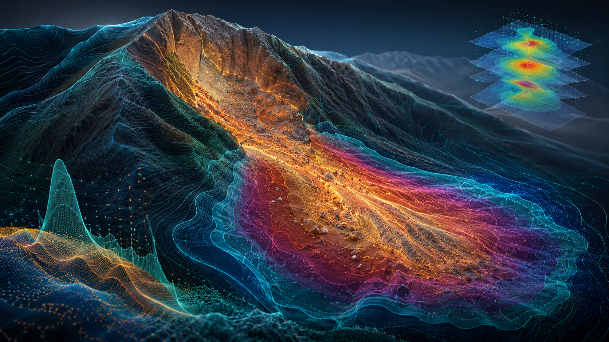

AI-informed random fields
Learning spatial heterogeneity from sparse observations, measurement data, images, and numerical simulations to model subsurface uncertainty.
Dr Derek Guotao Ma · University of Warwick · United kingdom
I develop stochastic, physics-informed, and AI-assisted models for complex engineering systems - turning uncertain data into predictive, interpretable, and actionable risk insight.
Research vision
My work connects stochastic mathematics, artificial intelligence, and decision-oriented risk analysis. The central question is simple: when data are sparse, noisy, heterogeneous, or shifting over time, how can we still make reliable predictions and better decisions?
The SRI lab builds models that integrate physical mechanisms, spatial-temporal randomness, machine learning, and interpretable uncertainty measures for engineering, energy, and finance applications.
Learning spatial heterogeneity from sparse observations, measurement data, images, and numerical simulations to model subsurface uncertainty.

02Data-and-physics-driven modelling for landslides, debris avalanches, and geohazard risk, with uncertainty propagation and risk prediction.
Risk pricing, tail-event modelling, stochastic processes, and AI-assisted decision systems for energy transfer and trading contexts.
Selected project directions
Generating, updating, and interpreting spatial-temporal uncertainty fields from sparse data, simulations, and images for risk-aware modelling.
Modelling low-probability, high-consequence events through stochastic simulation, scenario analysis, and uncertainty propagation.
Using computer vision, segmentation, and perception models to extract risk-relevant patterns from images, fields, and physical processes.
Developing stochastic pricing, risk transfer, and decision models for energy, climate-related, and financial uncertainty.
Teaching & supervision
I teach Engineering Mathematics and supervise student projects across uncertainty modelling, AI for engineering, risk analysis, applied mathematics, and computational decision-making. My teaching aims to help students move from formula-based learning to model-based reasoning.
People
We welcome students, visiting scholars, and collaborators interested in stochastic risk intelligence, uncertainty modelling, AI-informed inference, hazard risk assessment, energy risk, and computational finance.
PhD Student
University of Warwick
Stochastic modelling, geotechnical uncertainty, and random field analysis.
PhD Student
University of Warwick
Finance, pricing, quantitative risk modelling, and computational finance.
PhD Student
University of Warwick
AI, machine learning, computational vision, and geotechnical image analysis.
Visiting PhD Student
Nanchang University, China
Rainfall-induced landslides, neural operators, and physics-informed modelling.
Research Assistant
Chinese University of Hongkong, Hong Kong SAR, China
Computer vision, segmentation analysis, AI-assisted image processing for geotechnical visual intelligence
Previous Visiting Student · Now Marie Curie Fellow
University of Liverpool
GeoAI, stochastic modelling, and uncertainty-aware geotechnical simulation.
Associate Professor
Guizhou University, China
Visiting scholar and collaborator in geotechnical modelling and risk analysis.
Open Opportunities
Research Assistant, PhD Students · Visiting Scholars · Collaborators
I welcome motivated students and collaborators interested in stochastic risk intelligence, AI-informed uncertainty modelling, hazard assessment, and computational risk pricing.
Contact
I am open to interdisciplinary collaborations in stochastic risk intelligence, AI-informed uncertainty modelling, catastrophe and hazard risk assessment, energy risk, and computational finance.